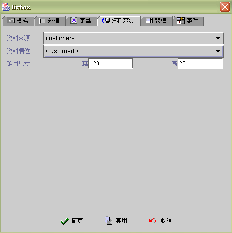
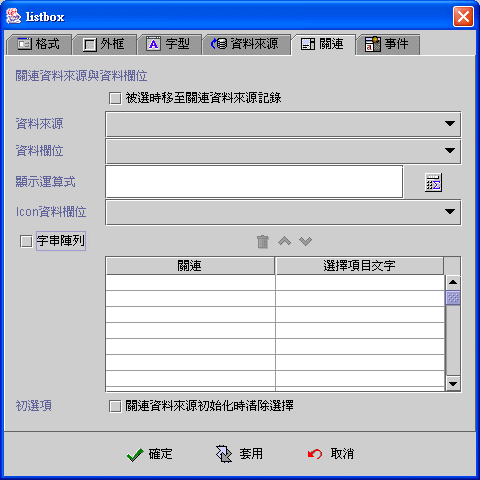
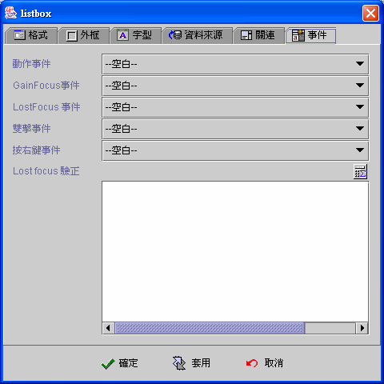

|

清單方塊 (Listbox component)

共同屬性 (common properties)
資料來源
(data source)
關連資料來源
(lookup data source)
事件
(event)
運算式屬性存取
(formula get/set properties)
清單方塊
(Listbox) 是以關連資料來源 (lookup data source) 或字串陣列
(string array) 組成列示的清單項目(items)，當清單方塊連結
(binding) 資料來源欄位 (data field) 時
，清單方塊會以資料來源的資料欄位值 (data field)，搜尋關連資料來源
(lookup data source) 的資料欄位值 (data field) 或字串陣列 (string array)，當其值相等時就標示該清單項目為選取項目。
清單方塊列示的項目(item)
是以運算公式 (formula)
的結果值顯示，所以顯示的項目不一定等於連結的資料欄位值，例如：聯結的資料欄位是代碼
(code) 欄位而顯示的項目是代碼的文字描述 (description)
欄位，使用者可以根據文字描述選取清單項目，而實際關連存檔的資料卻是代碼
(code)。
清單方塊可以只選用關連資料來源
(lookup data source)，而不連結 (binding) 資料來源 (data source)，如果設定 被選時移至關連資料來源記錄
的屬性，可以將清單方塊當成是關連資料來源 (lookup data
source) 的檔案記錄 (record)
移動選擇器，使用者按選清單項目 (item)，關連資料來源
(lookup data source) 即將目前檔案記錄 (current record) 移至 (move to)
該項目的檔案記錄，並引發關連資料來源的讀取前後事件
(before and after fetch event)，連結 (binding)
此關連資料來源的其他元件都會自動更新內含值。
清單方塊是虛擬模式
(virtual mode) 的元件，關連資料來源 (lookup data source)
的檔案記錄 (record)
在初始時，並不會全部讀入清單項目中，而是將客戶端
(client) 目前關連資料來源緩衝區 (buffer)
的檔案記錄讀入，當使用者以捲動軸流覽 (scroll)
或關連資料欄位不在緩衝區 (buffer)
且關連資料來源尚未至檔尾時，清單方塊會以背景執行緒
(background thread) 按關連資料來源的擷取記錄數 (row fetch)，讀入檔案記錄
(record) 至清單項目中。
資料來源
(data source)
-
資料來源
(data source)：選取資料來源。
-
資料欄位
(data field)：選取資料欄位。
-
項目尺寸
(item size)：清單方塊選項 (item) 的寬高。

▲Top
關連資料來源 (lookup data source)
-
被選時移至關連資料來源記錄：使用者選取清單方塊
(Listbox) 的項目(item) 時，關連資料來源將目前的資料記錄
(current record) 移至 (move to) 該項目的資料記錄 (record)
，並引發關連資料來源的讀取前後事件(before and after fetch
event)。而連結 (binding) 此關連資料來源的其他元件都會自動更新內含值。
-
關連資料來源
(lookup data source)：選取資料來源。
-
關連資料欄位
(lookup data field)：選取資料欄位。
-
顯示運算式
(display formula)：以運算式顯示項目資料(item)。
-
Icon資料欄位：在每個項目
(item) 前顯示圖示，選擇性 (option) 屬性。選用時系統以欄位型別
(field type) 判斷是 LONGVARBINARY 的圖檔資料或是 VARCHAR
的圖檔名稱，若是圖檔名稱必須將圖檔儲存於應用程式模組的 class
目錄中 Images 或 Preloadiamge 目錄下。
-
字串陣列
(string aray)：使用 "字串陣列"
而不以關連資料來源為清單方塊的項目資料。"關連" 為資料欄位， "選擇項目文字"為顯示項目文字。
-
初選項
(initial selection)：關連資料來源初始化時清除選擇。如果清單方塊沒有連結
(binding) 資料來源 (data source)，核選此屬性時，清單方塊初始為沒有任何選取項目的狀態，否則第一個項目為初始選項。如果清單方塊連結
(binding) 資料來源 (data source)，此項屬性無作用，其初始選項為資料來源欄位
(data source field) 與關連資料來源欄位 (lookup data source field)
相等的資料項目。

▲Top
事件 (event)
-
動作事件 (action event)：使用者按選
(clicked)
改變清單選項時，即引發事件 (fire event)。
-
Gain Focus 事件：當 Focus
移入清單方塊時，即引發事件 。
-
Lost Focus 事件：當 Focus
移出清單方塊時，即引發事件 。
-
雙擊事件 (double click event)：當雙擊滑鼠的左鍵時，即引發事件。
-
按右鍵事件 (right click event)：當按下滑鼠右鍵時，即引發事件。

▲Top
運算式屬性存取
(formula get/set properties)
SetProp("元件名稱",
"屬性", 值) ：屬性設定。
SetProp("元件名稱",
"屬性", 值1, 值2)：屬性設定。
GetProp("元件名稱",
"屬性")：屬性讀取。
| Set
Properties |
屬性
(Properties) |
值1
(Value 1) |
值2
(Value 2) |
說明
(Descriptions) |
| enabled |
1 致能，0 失效 |
|
致能與失效。 |
| setfocus |
1 設定 Focus |
|
設定 Focus。 |
| visible |
1 顯示，0 隱藏 |
|
顯示與隱藏。 |
| repaint |
1 重繪，2
立即重繪 |
|
重繪。 |
| revalidate |
1 重整清單方塊資料 |
|
重整清單方塊資料。 |
| selected |
N 選取第 N 個選擇項目 |
|
選取第 N 個選擇項目，N 由 1 起算，N = 0
清除選取。 |
| bg |
RGB(red, green, blue) |
|
背景顏色。值1 必須以Formula 的 RGB() 運算式給值。
|
| fg |
RGB(red, green, blue) |
|
前景顏色。值1 必須以Formula 的 RGB() 運算式給值。
|
| x |
正整數值 |
|
左座標位置。 |
| y |
正整數值 |
|
上座標位置。 |
| w |
正整數值 |
|
元件寬度。 |
| h |
正整數值 |
|
元件高度。 |
| xy |
正整數值 |
正整數值 |
左(Value1) 上(Value2) 座標位置。 |
| wh |
正整數值 |
正整數值 |
元件寬(Value1) 高(value2)度。 |
| Get
Properties |
| 屬性(Properties) |
傳回值
(Return value) |
說明 (Descriptions) |
| isenabled |
1 致能，0 失效 |
致能與失效。 |
| isvisible |
1 顯示，0 隱藏 |
顯示與隱藏。 |
| selected |
N 被選取的是第 N 個選擇項目 |
被選取的是第N個選擇項目，N由 1 起算，N=0 未選取。 |
| selectedcode |
被選取的關連資料值。 |
被選取的關連資料值。沒有選取列時回傳空字串。 |
| selectedtext |
被選取的顯示資料值。 |
被選取的顯示資料值。沒有選取列時回傳空字串。 |
| x |
整數值 |
左座標位置。 |
| y |
整數值 |
上座標位置。 |
| w |
整數值 |
元件寬度。 |
| h |
整數值 |
元件高度。 |
▲Top
Copyright © 2001~
2004 Probe Technology . All Rights Reserved.
Questions, comments,
and suggestions to Service@probe.com.tw
|